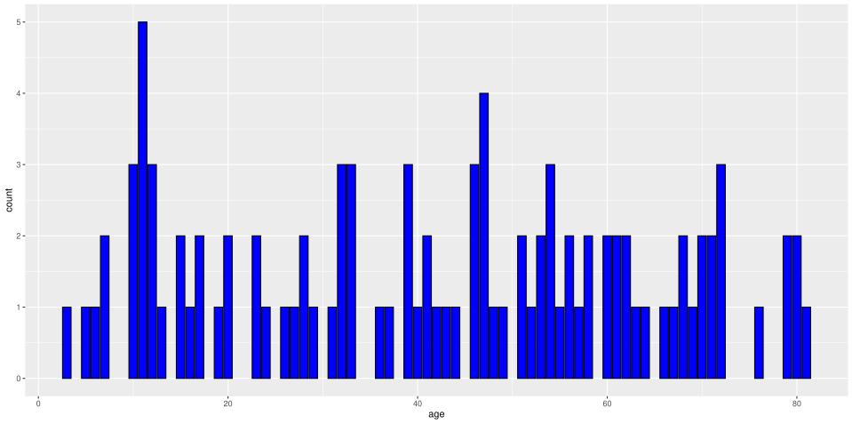
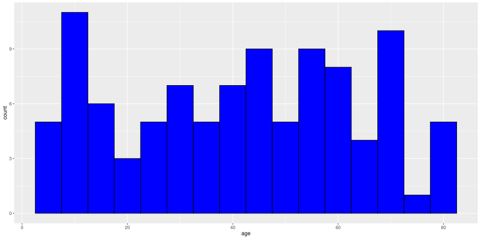
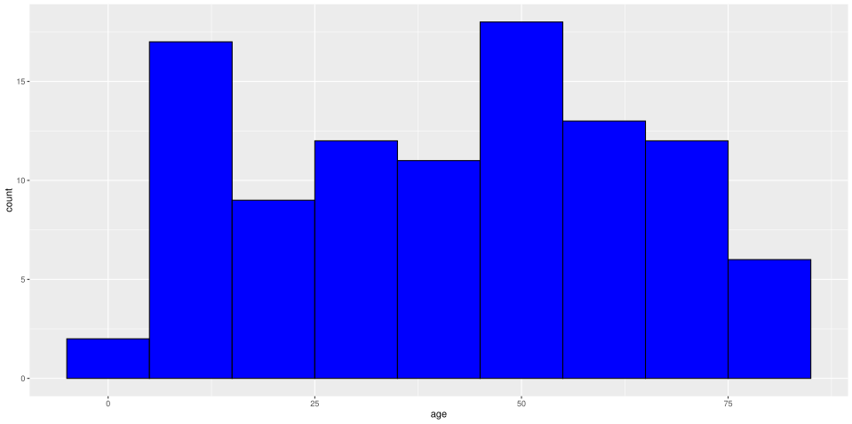
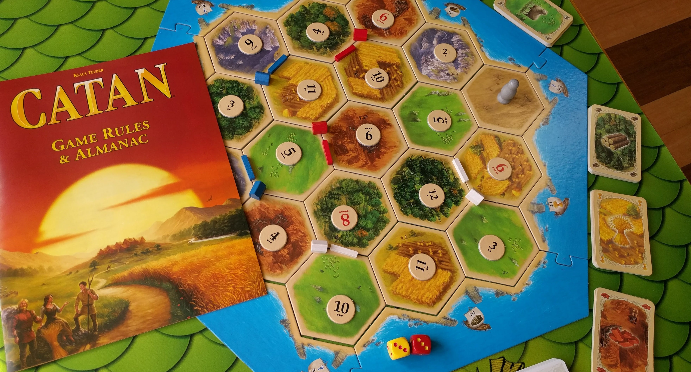

Statistics and Probability
[
Statistics
[sep=8pt,center,shadow=true,rounded=true]title
Statistics
Some terminology
-
Population: All relevant data.
Sample: Some of the relevant data, hopefully enough to be representative of the population.
-
This should be a random sample with no bias towards a group or individual in the population.
This can be difficult to achieve and careful thought needs to be given as to how data is collected.
-
Sample/population data can be:
Discrete: E.g., number of attacks on a port in a given hour of the day. Usually integer-valued, e.g., \(0\), \(1\), \(2\), etc.
Continuous: E.g., amount of time elapsed since previous attack. Often classified into groups, e.g., \(0-5\) minutes, \(5-10\) minutes, \(10-15\) minutes, etc.
Grouping Data
-
Suppose that we have data from a random sample of 100 people, giving their age at their last birthday.
66 |
70 |
10 |
54 |
62 |
13 |
11 |
15 |
69 |
26 |
49 |
11 |
3 |
67 |
10 |
54 |
42 |
32 |
56 |
39 |
60 |
79 |
33 |
12 |
47 |
24 |
19 |
47 |
63 |
32 |
7 |
70 |
55 |
46 |
11 |
20 |
15 |
39 |
37 |
28 |
72 |
46 |
64 |
61 |
51 |
56 |
53 |
61 |
11 |
80 |
53 |
28 |
76 |
6 |
5 |
39 |
58 |
29 |
52 |
54 |
47 |
60 |
62 |
51 |
72 |
41 |
57 |
32 |
12 |
33 |
17 |
40 |
20 |
10 |
27 |
47 |
71 |
68 |
44 |
7 |
23 |
17 |
81 |
23 |
12 |
33 |
16 |
46 |
71 |
48 |
58 |
79 |
80 |
43 |
31 |
72 |
68 |
36 |
41 |
11 |
-
It’s a little hard to get a feel for the data, so we could count the frequency in each bin, order the data numerically, or calculate various statistics.
-
In doing so, we lose some of the information but might get a clearer overview.
Grouping Data
-
Here we have placed the data into bins of class width 5.
Charts: Bar Chart

Charts: Histogram

Charts: Histogram

Measures of Central Tendency
-
Arithmetic Mean: Add up all of the values and divide by how many there are.
Median: Order the data and look at the middle value(s).
Mode: Tally the data and select the one with the highest frequency.
(Arithmetic) Mean
-
In a sample of five values (6, 9, 2, 4, 3) the mean value is:
\[ \frac{6 + 9 + 2 + 4 + 3}{5} = \frac{24}{5} = 4.8. \] -
The one hundred values from the previous histogram example add up to 4165 and so the mean value is \(\frac{4165}{100} = 41.65\).
-
For \(n\) data values \(x_1\), \(x_2\), \(\ldots \), \(x_n\), the formula for the mean is:
\[ \bar{x} = \frac{x_1 + x_2 + \ldots + x_n}{n}. \]
Median
-
Here we arrange the data values in ascending (or descending) order. Then the median is:
-
the middle item if there is an odd number of data items;
-
the average of the middle two items if there is an even number of data items.
-
-
E.g., if the ordered data is 2, 3, 4, 6, 9, then the middle item is 4 and so the median is 4.
-
From our histogram example, the sample of one hundred data values, the ordered data is:
3
5
6
7
7
10
10
10
11
11
11
11
11
12
12
12
13
15
15
16
17
17
19
20
20
23
23
24
26
27
28
28
29
31
32
32
32
33
33
33
36
37
39
39
39
40
41
41
42
43
44
46
46
46
47
47
47
47
48
49
51
51
52
53
53
54
54
54
55
56
56
57
58
58
60
60
61
61
62
62
63
64
66
67
68
68
69
70
70
71
71
72
72
72
76
79
79
80
80
81
-
The middle two values are 43 and 44, hence the median is 43.5.
Mode
-
The mode is the data value which occurs most in the sample.
For grouped data we can talk of a modal group or modal class, sometimes specifying the mid-point in order to give a single value.
For the one hundred data values in the histogram example the mode is clearly indicated on the bar chart as the tallest bar: 11. We can also tally values to find it.
Probability
[sep=8pt,center,shadow=true,rounded=true]title
Probability
Definition of Probability
-
\(A\) is a statement which is either true or false.
-
\(N\) is the number of trials, or observations.
-
\(S\) is the number of successes (so \(N - S\) is the number of failures).
-
For a single trial: Probability that \(A\) is true, or the probability of success, is: \[ P(A) = \frac{S}{N}. \]
Since \(0 \leq S \leq N\), then \(0 \leq P(A) \leq 1\).
The probability of failure is:
\[ P(\overline{A}) = \frac{N-S}{N} = 1 - \frac{S}{N} = 1 - P(A). \]
Probability: Example 1
Tossing a coin:
-
Toss a coin \(4\) times: we expect \(2\) heads.
-
Toss a coin \(100\) times: we expect \(50\) heads.
-
Toss a coin once: what do we expect?
\[ P(\mbox{one head in one trial}) = \frac{1}{2}. \] -
\(A\) = ‘a head shows when a coin is tossed’, so \(P(A) = \frac{1}{2}\).
Probability: Example
Age at last birthday:
-
Probability that one of the people selected at random is in the 15-19 age group.
-
The total number of outcomes is \(100\) and the number of ‘successes’ is \(6\).
-
The probability of success is: \(P(\mbox{Success}) = \frac{6}{100}\).
-
The probability of failure is: \(P(\mbox{Failure}) = \frac{94}{100}\).
Probability: Example 3
Rolling dice:
-
Two dice are rolled and the sum of the spots is calculated.
-
\(A\) = ‘The sum is \(7\) when two dice are rolled.’
(1, 1)
(1, 2)
(1, 3)
(1, 4)
(1, 5)
(1, 6)
(2, 1)
(2, 2)
(2, 3)
(2, 4)
(2, 5)
(2, 6)
(3, 1)
(3, 2)
(3, 3)
(3, 4)
(3, 5)
(3, 6)
(4, 1)
(4, 2)
(4, 3)
(4, 4)
(4, 5)
(4, 6)
(5, 1)
(5, 2)
(5, 3)
(5, 4)
(5, 5)
(5, 6)
(6, 1)
(6, 2)
(6, 3)
(6, 4)
(6, 5)
(6, 6)
-
There are 36 possible outcomes when rolling two dice. But only six of these outcomes make \(A\) true.
-
Number of trials \(N = 36\), number of successes \(S = 6\).
\[ P(A) = \frac{6}{36} = \frac{1}{6}. \]

And, Or: Intersection, Union
-
Last semester you used \(A \cdot B\) to mean \(A\) AND \(B\). We will sometimes use \(A \wedge B\) instead.
-
Its analogue in set theory is intersection: \(A \cap B\).
-
Last semester you used \(A + B\) to mean \(A\) OR \(B\). We will sometimes use \(A \vee B\) instead.
-
Its analogue in set theory is union: \(A \cup B\).
Law of multiplication
-
Consider two events \(A\) and \(B\).
-
\(P(A)\) and \(P(B)\) are denoted by the sets in the Venn diagram.
![\begin{tikzpicture} [framed, background rectangle/.style={draw=black,fill=white}, inner frame sep=3ex,
dot/.style = {circle, inner sep=0pt, minimum size=1mm, fill,
node contents={}}
]
\def\firstcircle{(-0.9,0) coordinate (a) circle (1.5cm)}
\def\secondcircle{(0.9,0) coordinate (b) circle (1.5cm)}
% \begin{scope}
% \clip \secondcircle;
% \fill[cyan] \firstcircle;
% \end{scope}
\draw[overlay] node [] at (3.5,2.4) {$U$};
\draw[fill=orange, fill opacity = 0.4] \firstcircle;
\draw node[above left, label distance=3ex] at (-2,1) {$P(A)$};
% \draw \firstcircle node[dot,label=$n_{ij}$];
\draw[fill=blue, fill opacity = 0.4] \secondcircle;
\draw node[above right, label distance=3ex] at (2,1) {$P(B)$};
% \node (c) [above] at (current bounding box.north -| a) {$t_i$};
% \node at (c -| b) {$t_j$};
% \alttext{A venn diagram of two sets. A rectangular area labelled U surrounds two overlapping circles, one of which is labelled A and the other is labelled B.}
\end{tikzpicture}](images/img-0005.svg)
-
The intersection of the sets is \(P(A \wedge B)\): this is the probability \(A\) and \(B\) are both true.
-
If \(A\) and \(B\) are mutually exclusive (i.e., can’t both be true at the same time), then \(P(A \wedge B) = 0\).
-
If \(A\) and \(B\) are independent (i.e., the outcome of one does not affect the other), then \(P(A \wedge B) = P(A) \times P(B)\).
Probability: Example 4
-
A pack of 52 playing cards has 26 red cards and 26 black cards.
-
One card is drawn from the full pack at random, then replaced in the pack.
-
Then a second card is drawn from the pack.
-
Calculate the probability that both cards are red.
-
Let \(A =\) ‘The first card is red’ and \(B = \) ‘The second card is red’.
-
\(P(A) = \frac{26}{52} = \frac{1}{2}\) and \(P(B) = \frac{26}{52} = \frac{1}{2}\). The two events are independent, so:
\[ P(A \wedge B) = P(A) \times P(B) = \frac{1}{2} \times \frac{1}{2} = \frac{1}{4}. \]
Law of Addition
-
Consider two events \(A\) and \(B\).
-
\(P(A)\) and \(P(B)\) are denoted by the sets in the Venn diagram.
-
The union of the sets is \(P(A \vee B)\): this is the probability that \(A\) or \(B\) are true.
-
If \(A\) and \(B\) are mutually exclusive, then \(P(A \vee B) = P(A) + P(B)\).
-
In general,
\[ P(A \vee B) = P(A) + P(B) - P(A \wedge B). \]
Probability: Example 4 continued
-
Same setup as our previous example, but now we want the probability that at least one card is red. (\(P(A) = P(B) = \frac{1}{2}\))
-
We want to find \(P(A \vee B) = P(A) + P(B) - P(A \wedge B)\). Since \(A\) and \(B\) are independent, then \(P(A \wedge B) = P(A) \times P(B)\). So:
\[ P(A) + P(B) - P(A) \times P(B) = \frac{1}{2} + \frac{1}{2} - \frac{1}{2} \times \frac{1}{2} = \frac{3}{4}. \]
Example: Network 1
-
A short network link consists of two sections (\(a\)) and (\(b\)), in series as shown below.
-
The link functions only if both (\(a\)) and (\(b\)) both function.
-
The two sections are independent. If one fails, the other is not affected.
-
The probability that (\(a\)) functions is \(P(A) = 0.8\), while for (\(b\)) the probability is \(P(B) = 0.9\).
-
The probability that the network functions (both sections function) is:
\[ P(A \wedge B) = P(A) \times P(B) = 0.8 \times 0.9 = 0.72. \]
Example: Network 2
-
A short network link consists of two sections (\(a\)) and (\(b\)), in parallel as shown below.
-
The link functions if either of (\(a\)) or (\(b\)) function (or both).
-
The two sections are independent. If one fails, the other is not affected.
-
The probability that (\(a\)) functions is \(P(A) = 0.8\), while for (\(b\)) the probability is \(P(B) = 0.9\).
-
The probability that the network functions is:
\[ P(A \vee B) = P(A) + P(B) - P(A \wedge B) = 0.8 + 0.9 - 0.72 = 0.98. \]
Conditional Probability
-
When two events are not independent, then the process is not as simple.
-
Consider a single trial consisting of two events \(A\) and \(B\).
-
The conditional probability \(P(B|A)\) means ‘the probability that \(B\) will be true given that \(A\) is already true’.
Probability: Example 5
-
A pack of 52 playing cards has 26 red cards and 26 black cards.
-
One card is drawn from the full pack at random, then kept.
-
Then a second card is drawn from the pack.
-
Calculate the probability that both cards are red.
-
Let \(A =\) ‘The first card is red’ and \(B = \) ‘The second card is red’.
-
\(P(A) = \frac{26}{52} = \frac{1}{2}\) as before but \(P(B)\) is a conditional probability because it depends on the result of event \(A\).
-
If the first card was red, then there are now only 25 cards left in the remaining 51 cards, so:
\[ P(B|A) = \frac{25}{51}. \] -
This means the probability that the second card is red given the first card was red is:
\[ P(A \wedge B) = P(B|A) \times P(A) = \frac{25}{51} \times \frac{1}{2} = \frac{25}{102}. \]
Conditional Probability
-
The conditional probability can be expressed as \[ P(B|A) = \frac{P(A \wedge B)}{P(A)}. \]
This can be rearranged as
\[ P(A \wedge B) = P(B|A) \times P(A). \]If \(A\) and \(B\) are independent, then
\[ P(B|A) = P(B). \]
Probability: Example 6
-
Calculate the probability that the first card is black and the second card is red.
-
Both cards are red:
\[ P(A \wedge B) = P(B|A) \times P(A) = \frac{25}{51} \times \frac{1}{2} = \frac{25}{102}. \] -
First card is black, second card is red:
\[ P(\overline{A} \wedge B) = P(B|\overline{A}) \times P(\overline{A}) = \frac{26}{51} \times \frac{1}{2} = \frac{26}{102}. \]
Probability Trees
-
For small examples, we can often visualise things in the form of a probability tree.